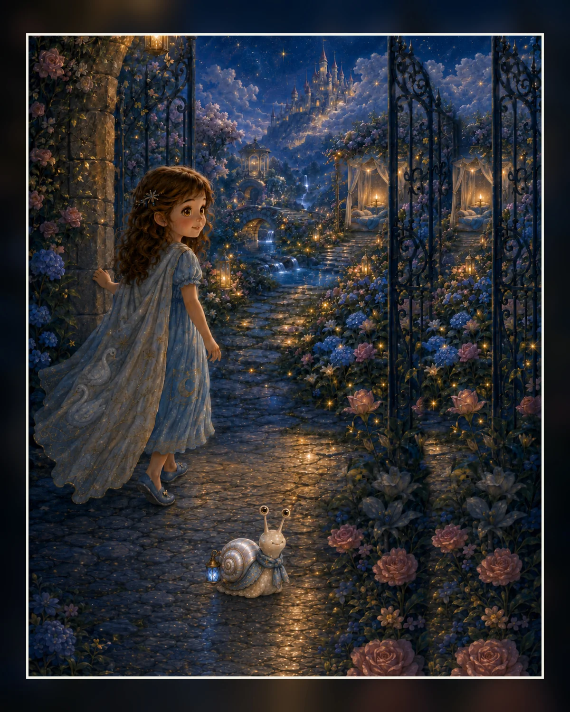
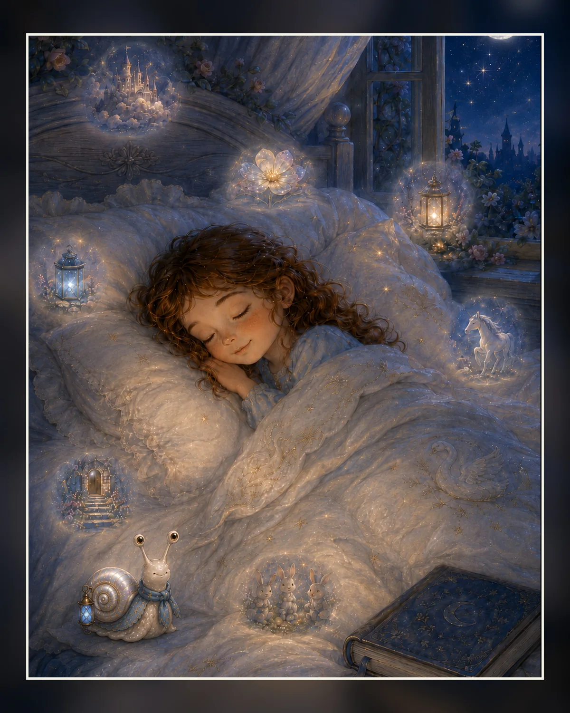

01 · ✦
La princesse qui entendait les fleurs chanter
Le silence du jardin et la première porte.
Un conte du soir · 6–9 ans
Quand la Berceuse des Rêves Doux perd ses sept notes, Liora et Nacrelin traversent le royaume pour les retrouver avec patience, imagination et tendresse.
Le livre
Liora a six ans et demi. Elle entend les fleurs chanter. Lorsque la Fleur de Velours se tait, un minuscule guide nacré apparaît : Nacrelin. Ensemble, ils suivent sept notes — Do, Ré, Mi, Fa, Sol, La, Si — jusqu’à la Reine des rêves.
Le livre se lit au rythme de la famille : un chapitre, une porte ou quelques pages à la fois.

Le voyage
Chaque illustration ouvre une étape du même monde visuel : nacre, bleu nuit, or doux et lumière de veilleuse.
Le silence du jardin et la première porte.
Être perdu ne signifie pas être abandonné.
Une histoire peut commencer par une toute petite phrase.
Donner un petit lit aux pensées avant de dormir.
On n’a pas besoin d’être parfait pour être aimé.
On peut être plusieurs douceurs à la fois.
La sécurité douce peut avoir des ailes et des écailles.
La tendresse relie toutes les notes de la berceuse.
Bibles visuelles
Les Character Sheets servent de référence absolue pour garder les mêmes visages, matières, proportions et signes distinctifs.
6 ans et demi, cheveux châtains bouclés, yeux noisette dorés, robe bleu ciel et couverture brodée de cygnes.
Guide nacré minuscule : exactement deux yeux au bout des antennes, petite bouche discrète, écharpe bleue et lanterne fixée à la coquille.
Exactement sept pétales : rose, bleu, or, violet, vert tendre, blanc lune et argent.
Éditions & packs
Les tarifs sont validés comme base de lancement. Les boutons commerciaux seront activés après finalisation de la distribution.
La version la plus accessible, pensée pour tablette et ordinateur.
Livre PDF, rituel, carte des notes, marque-pages, imprimables et guide Story Machine.
Character Sheets, prompts sélectionnés, coulisses et carnet de création en plus du Pack Famille.
Format prévu : 8 × 10 pouces, couleur premium, couverture mate. Prix à confirmer selon le coût d’impression final.
Centre de bonus
Le site V2 prépare un vrai espace de téléchargement. Les packs commerciaux seront branchés ici sans changer la structure du site.

Aerith Story Machine
Cette version fonctionne entièrement dans le navigateur. Les choix restent sur l’appareil : aucun compte enfant, aucun formulaire, aucune donnée envoyée.
Coulisses
Le projet conserve les prompts, les Character Sheets et les décisions de cohérence pour expliquer comment l’univers a été construit.
FAQ
Pas encore. La maquette V3 est en phase préfinale ; l’ISBN, la couverture imprimeur et l’épreuve papier restent à finaliser.
Pour offrir une édition moins chère que le papier, adaptée aux tablettes et ordinateurs, tout en conservant les illustrations en couleur.
Non. La V2 fonctionne localement et ne transmet aucune sélection. Elle est conçue comme un atelier familial guidé par un adulte.
Oui, si les contraintes d’impression le permettent. La préférence est une fabrication en France, à confirmer après choix du prestataire.